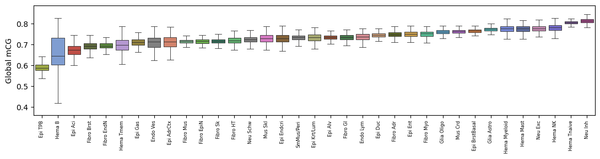
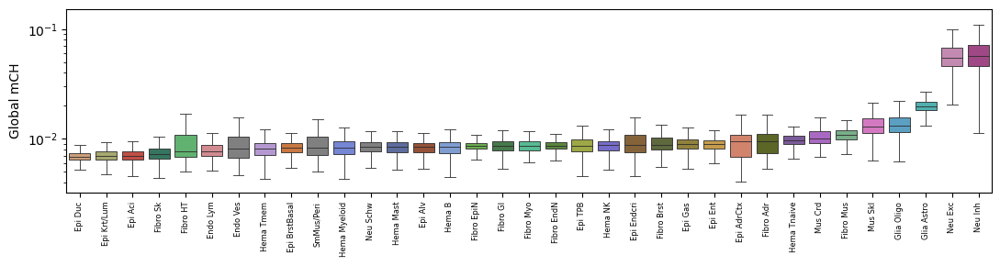
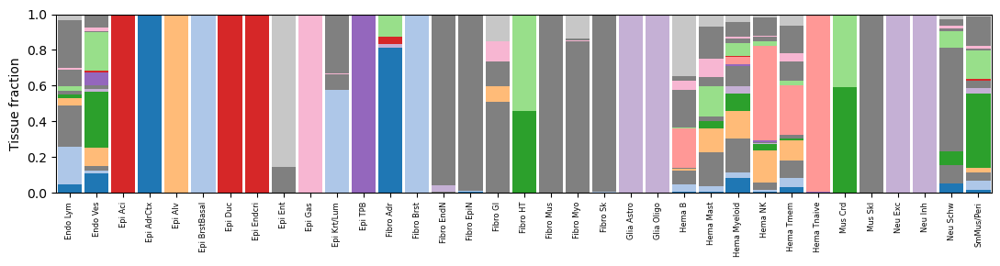

Demo: reproduce Fig 2A from the public inputs#
A small, self-contained notebook that actually runs on the shared atlas object to
(1) verify the headline numbers against the paper and (2) reproduce Fig. 2A (global
mCG per major type). It only needs clustering/merged/5kCG100k3C_summary.h5ad and
L1color.tsv, so it executes in seconds — the pattern every other notebook follows.
# === Reproduction setup — edit ENTEX_ROOT / REF_ROOT for your machine ===
import os, sys
ENTEX_ROOT = os.environ.get('ENTEX_ROOT', '/large_storage/zhoulab/zhoujt/project/ENTEx')
REF_ROOT = os.environ.get('REF_ROOT', '/large_storage/zhoulab/ref')
BOOK_ROOT = os.environ.get('BOOK_ROOT', f'{ENTEX_ROOT}/analysis/HumanCellEpigenomeAtlas')
sys.path.insert(0, BOOK_ROOT)
os.chdir(f'{ENTEX_ROOT}/analysis')
import repro_guard
indir = f'{ENTEX_ROOT}/'
[repro_guard] active — no-overwrite (existing files are cached/skipped)
import anndata, numpy as np, pandas as pd
import matplotlib as mpl
import matplotlib.pyplot as plt, seaborn as sns
mpl.rcParams['pdf.fonttype']=42; mpl.rcParams['ps.fonttype']=42
mpl.rcParams['font.family']='sans-serif'
import warnings; warnings.filterwarnings('ignore')
Verify the headline numbers against the paper#
Abstract: 86,689 nuclei · 35 major types · 206 subtypes · 16 tissues.
adata = anndata.read_h5ad(f'{indir}clustering/merged/5kCG100k3C_summary.h5ad')
obs = adata.obs
print('cells :', adata.n_obs, '(paper: 86,689)')
print('major types:', obs['L1_annot'].nunique(), '(paper: 35)')
print('tissues :', obs['Tissue'].nunique(), '(paper: 16)')
cells : 86689 (paper: 86,689)
major types: 35 (paper: 35)
tissues : 16 (paper: 16)
Per-tissue cell counts printed in Fig. 1 (labels differ slightly; counts are exact):
paper = {'Adrenal Gland':5690,'Breast':5299,'Esophagus':5949,'Lung':5124,
'Pancreatic Islet':4700,'Peripheral Blood':5780,'Placenta':5731,'Primary Motor Cortex':8225,
'Skeletal Muscle':5569,'Skin':4353,'Small Intestine':3067,'Stomach':5982,
'Tibial Nerve':4860,'Transverse Colon':5836,'Left Ventricle':5697,'Right Atrium Appendage':4827}
vc = obs['tissue_annot'].value_counts().to_dict()
chk = pd.DataFrame({'code':[vc.get(t) for t in paper], 'paper':list(paper.values())}, index=paper)
chk['match'] = chk['code']==chk['paper']
print(chk); print('\nall match:', bool(chk['match'].all()), '| total:', int(chk['code'].sum()))
code paper match
Adrenal Gland 5690 5690 True
Breast 5299 5299 True
Esophagus 5949 5949 True
Lung 5124 5124 True
Pancreatic Islet 4700 4700 True
Peripheral Blood 5780 5780 True
Placenta 5731 5731 True
Primary Motor Cortex 8225 8225 True
Skeletal Muscle 5569 5569 True
Skin 4353 4353 True
Small Intestine 3067 3067 True
Stomach 5982 5982 True
Tibial Nerve 4860 4860 True
Transverse Colon 5836 5836 True
Left Ventricle 5697 5697 True
Right Atrium Appendage 4827 4827 True
all match: True | total: 86689
Reproduce Fig. 2A — global mCG per major type#
Boxplot of per-cell genome-wide mCG (mCGFrac), major types ordered by median mCG.
Trophoblast / PMD-rich epithelia sit lowest; neurons highest — as in the paper.
L1 = pd.read_csv(f'{indir}L1color.tsv', sep='\t', index_col=0)
abbr2color = {r['L1_abbr']: r['color'] for _, r in L1.iterrows()}
order = obs.groupby('L1_annot')['mCGFrac'].median().sort_values().index.tolist()
fig, ax = plt.subplots(figsize=(11,3))
sns.boxplot(data=obs, x='L1_annot', y='mCGFrac', order=order, hue='L1_annot',
palette={t:abbr2color.get(t,'grey') for t in order}, legend=False,
fliersize=0, linewidth=.6, ax=ax)
ax.set_xticklabels(order, rotation=90, fontsize=6)
ax.set_ylabel('Global mCG'); ax.set_xlabel(''); fig.tight_layout()
print('lowest :', order[:3]); print('highest:', order[-3:])
lowest : ['Epi TPB', 'Hema B', 'Epi Aci']
highest: ['Hema NK', 'Hema Tnaive', 'Neu Inh']

Reproduce Fig. 3A — global mCH per major type#
Neuronal types (Neu Exc/Inh) carry ~10× the mCH of non-neuronal types, so the plot is split; here we simply show the ordering to verify.
order_ch = obs.groupby('L1_annot')['mCHFrac'].median().sort_values()
print('lowest mCH :', order_ch.index[:3].tolist())
print('highest mCH:', order_ch.index[-3:].tolist(), '(expect Neu Inh / Neu Exc on top)')
fig, ax = plt.subplots(figsize=(11,3))
sns.boxplot(data=obs, x='L1_annot', y='mCHFrac', order=order_ch.index.tolist(), hue='L1_annot',
palette={t:abbr2color.get(t,'grey') for t in order_ch.index}, legend=False,
fliersize=0, linewidth=.6, ax=ax)
ax.set_xticklabels(order_ch.index.tolist(), rotation=90, fontsize=6)
ax.set_ylabel('Global mCH'); ax.set_xlabel(''); ax.set_yscale('log'); fig.tight_layout()
lowest mCH : ['Epi Duc', 'Epi Krt/Lum', 'Epi Aci']
highest mCH: ['Glia Astro', 'Neu Exc', 'Neu Inh'] (expect Neu Inh / Neu Exc on top)

Reproduce Fig. 1E — tissue composition per major type#
tis = pd.crosstab(obs['L1_annot'], obs['tissue_annot'], normalize='index')
tcol = pd.read_csv(f'{indir}tissuecolor.tsv', sep='\t', index_col=0)
t2c = {r.get('tissue_annot', i): r['color'] for i,r in tcol.iterrows()} if 'tissue_annot' in tcol else {}
cols = [c for c in tis.columns]
fig, ax = plt.subplots(figsize=(11,3)); bottom = np.zeros(len(tis))
for c in cols:
ax.bar(range(len(tis)), tis[c].values, bottom=bottom, width=.9,
color=t2c.get(c,'grey'), label=c)
bottom += tis[c].values
ax.set_xticks(range(len(tis))); ax.set_xticklabels(tis.index, rotation=90, fontsize=6)
ax.set_ylabel('Tissue fraction'); ax.set_xlim(-.5,len(tis)-.5); fig.tight_layout()
print('tissues per major type add to 1:', bool(np.allclose(bottom,1)))
tissues per major type add to 1: True
